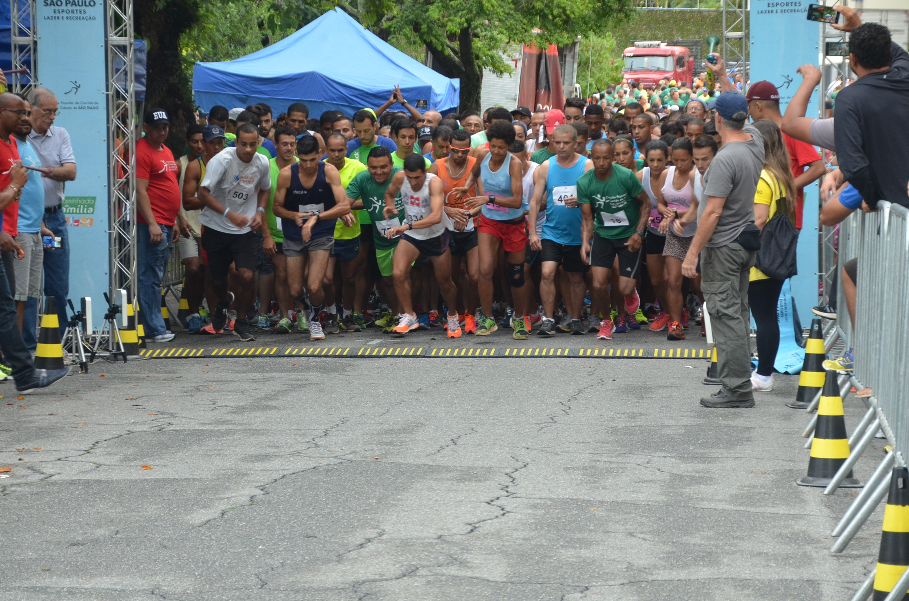
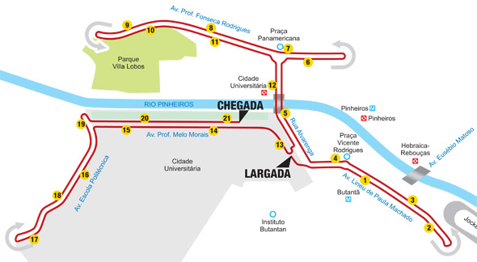

Maratona de Corrida Descodificadas
A Maratona de Corrida é um evento anual que reúne corredores de todo o país para uma competição saudável e divertida. Com percursos de 5 km, 10 km e 21 km, há opções para todos os níveis de habilidade.
Confira algumas fotos da nossa última edição:

Largada da Maratona de Corrida

Percurso da Maratona de Corrida
Chegada da Maratona de Corrida